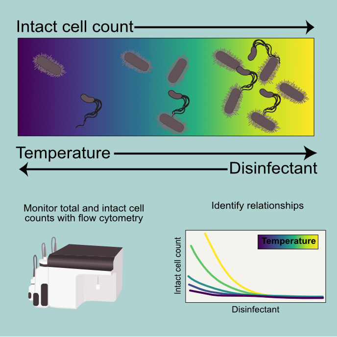

While surface waters are important drinking water sources and recreational water bodies, they can also harbor pathogens. Human health risks associated with surface water use are informed by modeling the fate and transport of these pathogens. Methods that can assess pathogen integrity and genome damage need to be applied and validated in persistence studies, particularly for pathogens that are difficult to culture, including norovirus.

Applying principles of microbiology, data science, and statistics to protect water quality and public health
Microorganisms are monitored in engineered water systems, source waters, and receiving waters to protect water quality and public health. I am interested in the microbial contaminants in these systems that either affect humans directly (i.e., pathogens) or cause issues in the built or natural environments in which they reside (e.g., microbially-induced corrosion in drinking water distribution systems). Effective data modeling and visualization practices are helpful for understanding interactions between microorganisms, humans, and the environment.
Research
Mechanisms of pathogen inactivation in surface water
Applications of wastewater-based epidemiology (WBE)

Wastewater contains pathogen genetic material that can be monitored to assess disease burden in the contributing population. Consistent pathogen monitoring in wastewater produces data that are beneficial for drinking water providers, wastewater treatment service providers, and public health departments. More work is needed validating WBE for pathogens in addition to SARS-CoV-2, such as those relevant to direct potable reuse.
Effects of disturbances on microbial communities in water systems
Shifts in microbial community composition can occur because of local or site-to-site variations (e.g., residual disinfectant concentration, pipe material, and pipe age) or system-scale changes that affect the whole distribution system (e.g., natural events, treatment upgrades, and changes in source water). A deeper understanding of shifts in microbial community composition following disturbances are needed to inform response.
Enhanced microbial monitoring in engineered water systems
Enhanced methods of microbial assessment include methods for microbial abundance (e.g., flow cytometry-based cell counts), microbial community composition (e.g., 16S rRNA gene amplicon sequencing), and specific microbial targets (e.g., qPCR). Combining high resolution enhanced microbial assessment data along with physicochemical water quality data and machine learning could aid in early identification of common microbially-induced issues in water systems.
Appointments
Education
Teaching Experience
Publications
Publications last scraped from Google Scholar for Lauren C Kennedy in February 2022
*authors contributed equally to the work
Estimating relative abundance of two SARS-CoV-2 variants through wastewater surveillance at two large metropolitan sites
A Yu, B Hughes, M Wolfe, T Leon, D Duong, A Rabe, L Kennedy, S Ravuri, ...
(2021).
Tools for interpretation of wastewater SARS-CoV-2 temporal and spatial trends demonstrated with data collected in the San Francisco Bay Area
HD Greenwald*, LC Kennedy*, A Hinkle, ON Whitney, VB Fan, ...
(2021). Water Research X 12, 100111
Sewage, Salt, Silica, and SARS-CoV-2 (4S): An Economical Kit-Free Method for Direct Capture of SARS-CoV-2 RNA from Wastewater
ON Whitney, LC Kennedy, VB Fan, A Hinkle, R Kantor, H Greenwald, ...
(2021). Environmental science & technology 55 (8), 4880-4888
Challenges in Measuring the Recovery of SARS-CoV-2 from Wastewater
RS Kantor, KL Nelson, HD Greenwald, LC Kennedy
(2021). Environmental Science & Technology 55 (6), 3514-3519
Genome sequencing of sewage detects regionally prevalent SARS-CoV-2 variants
A Crits-Christoph, RS Kantor, MR Olm, ON Whitney, B Al-Shayeb, YC Lou, ...
(2021). MBio 12 (1), e02703-20
SARS-CoV-2 RNA is enriched by orders of magnitude in solid relative to liquid wastewater at publicly owned treatment works
S Kim, LC Kennedy, MK Wolfe, CS Criddle, DH Duong, A Topol, BJ White, ...
(2021). medRxiv
Operationalizing a routine wastewater monitoring laboratory for SARS-CoV-2
RS Kantor, HD Greenwald, LC Kennedy, A Hinkle, S Harris-Lovett, ...
(2021). medRxiv
Interpretation of temporal and spatial trends of SARS-CoV-2 RNA in San Francisco Bay Area wastewater
HD Greenwald, LC Kennedy, A Hinkle, ON Whitney, VB Fan, ...
(2021). medRxiv
Effect of disinfectant residual, pH, and temperature on microbial abundance in disinfected drinking water distribution systems
LC Kennedy, SE Miller, RS Kantor, KL Nelson
(2021). Environmental Science: Water Research & Technology 7 (1), 78-92
Direct Wastewater RNA Extraction via the" Milk of Silica (MoS)" Method-A Companion Method to" Sewage, Salt, Silica and SARS-CoV-2 (4S)"
O Whitney, B Al-Shayeb, A Crits-Cristoph, M Chaplin, V Fan, H Greenwald, ...
(2020).
High-throughput DNA sequencing to profile microbial water quality of potable reuse
MB Leddy, MH Plumlee, RS Kantor, KL Nelson, SE Miller, LC Kennedy, ...
(2018). Water Innov, 33-37
CNC-loaded hydrogel particles generated from single-and double-emulsion drops
C Ye, L Kennedy, K Shirk, UM Córdova-Figueroa, J Youngblood, ...
(2015). Green Materials 3 (1), 25-34